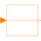

IntegerPassThroughPass a Integer signal through without modification |

|
Information
This information is part of the Modelica Standard Library maintained by the Modelica Association.
Passes a Integer signal through without modification. Enables signals to be read out of one bus, have their name changed and be sent back to a bus.
Connectors (2)
| u |
Type: IntegerInput Description: Input signal |
|
|---|---|---|
| y |
Type: IntegerOutput Description: Output signal |